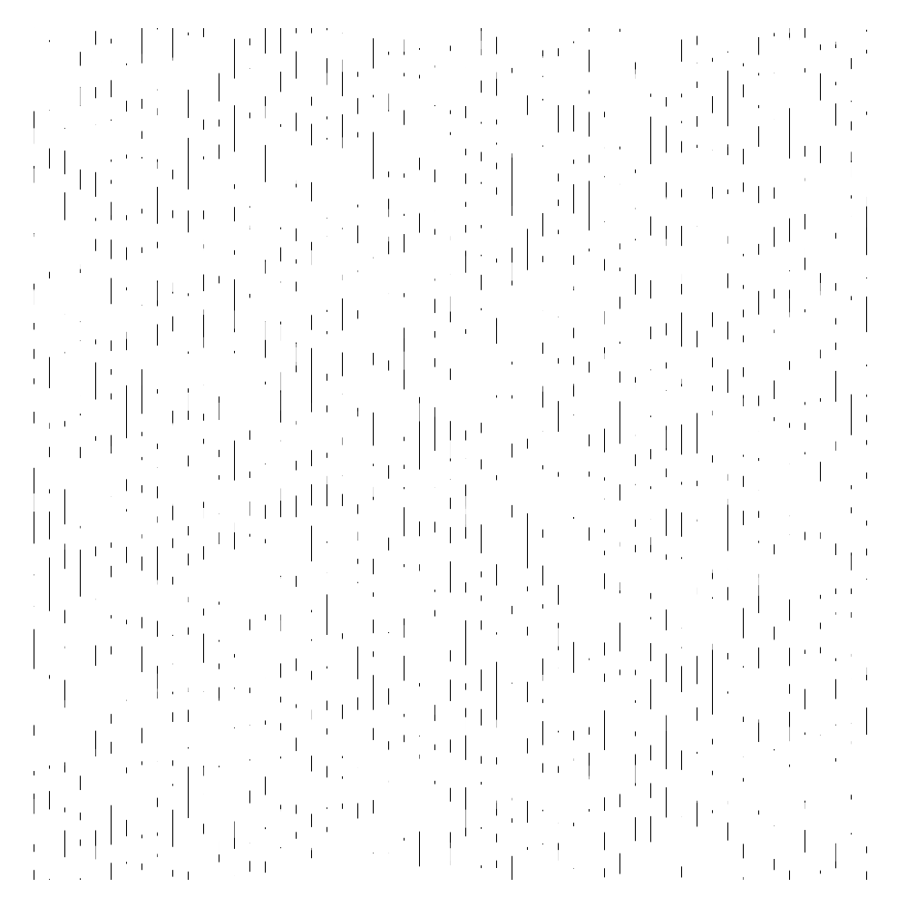
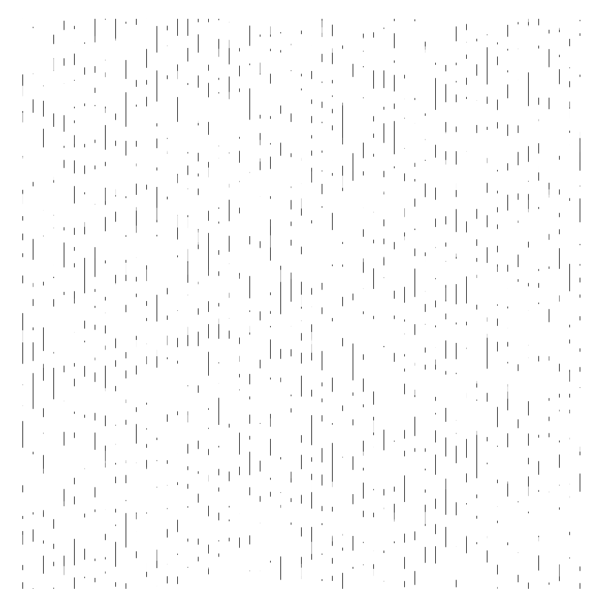
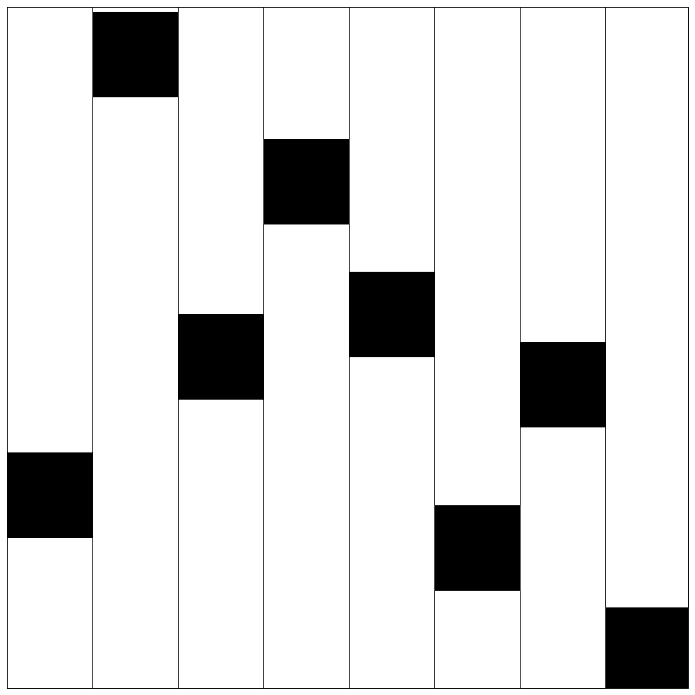

In this project I will be making my way through the Armin Hofmann Graphic Design Manual in
an attempt to ground myself in the fundamentals of design theory.
It is my hope that working through this book I will begin to internalise the swiss style of design.
Throughout this project I will be limiting myself to using only the Processing software. Teaching myself to create graphics whilst at the same time as expanding on my coding knowledge.
By the end of this project I hope to have an interesting body of work for display.


At this point in my journey I decided to start adding in some programmatic randomness into the works instead of placing the blank squares in one by one.
By making a the the x and y arguments in the rect random the lines slowly start to dissapear over time as the drawing gets rewritten each cycle
In the code I wrote program that saves an image every 100 frames so that I don't get an overwhelming amount of images.
Here are a sequence of images from the sketch


 



Again here I added a random function to the y axis of the black rect blocks to allow for a random placement of the blocks in the sketch

It's at around this point that I'm starting to try to work with classes. I want to try and have some flexability in my code so that i can start taking these examples and adding randomness to them and taking them just beyond the basic example given within the book.